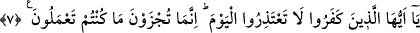

Çünkü bu saydıklarımız hem emredilenlere uyma sûretiyle ibâdet sevabı ve hem de
yasaklardan kaçınma ecrini bir arada toplarlar.
Kirmânî Buhârî-yi Şerîfi’inde der ki: “Yasak edilen şeylerden terk fiilleri de
ameldir; çünkü sahîh olan görüşe göre ‘terk‘ nefsin alıkonulması demektir, bu da niyete
muhtaçtır” denilecek olursa buna şöyle cevap vermemiz mümkündür: Evet, maksad
Şâri’in emrine sarılmak ve sevâb elde etmek ise durum böyledir, ama buna karşılık
cezânın düşürülmesi hedefleniyorsa bu takdirde cevabımız olumsuz olacaktır. Sözgelimi
zinâyı terkeden kimse bu fiiliyle sevâb elde edebilmesi için niyet etmesi gerekir.
Meşhur olan görüşe göre terk fiiliyle iskat kasdediliyorsa niyete ihtiyaç yoktur. Yâni
terk fiilleriyle sevâb elde edilmek ve Şâri’in emrine sarılmak isteniyorsa bu fiillerde
Allah’ın emrine sarılmış olmak için terkin kasdedilmiş olması şarttır. Şu halde zinâyı
yapmayan kimse, ancak bu terkiyle Allah’ın emrine sarılmayı amaçlıyorsa bundan sevâb
elde eder.
7. Ey kâfirler! Bugün özür dilemeyin! Siz ancak işlediklerinizin cezâsını
çekeceksiniz, (denilir).
“Ey kâfirler!” yâni melekler bu kimseleri kendilerine emredildiği biçimde cehenneme
sokarlarken kendilerine bu şekilde hitâb edilir. Yâni zebânîler kâfirleri günahlarından
dolayı cehenneme götürürler, onlar itirâz ederek kurtulmaya çalışırlar, sonra Allah
Teâlâ meleklere şöyle buyurur: “Ey kâfirler!” “Bugün özür dilemeyin!” Yâni bugün
özür beyan etmeyiniz; zira makbûl olmaz ve size fayda vermeyecektir.
Kàşânî demiştir ki: Çünkü bedenin harab olmasından ve kapkaranlık heyetlerin
yerleşmesinden sonra artık o dünyâda amelleri tamamlama olmayacağı için yapılan
amellere cezâdan başka bir şey yoktur.
Îtizâr, özür dilemektir. Denilir ki: Suçumdan dolayı filân kişiden özür diledim, o da
özrümü kabûl etti. Mûtezir/özür dileyen, haklı ya da haksız olabilir.
Râğıb’ın ifâdesine göre Arapça’da özür bir insanın günahını silecek olan şeyi
araştırması demektir. Bu da üç çeşittir: Özür dileyen ya “bu işi ben yapmadım“der veya
“şunun için yaptım” der ve günahkâr durumundan kendini çıkaracak olan şeyi zikreder
ya da “yaptım ama bir daha yapmam” der. Bu üçüncü özür şekli tevbedir. Her tevbe bir
özür dilemedir, fakat her özür dileme tevbe değildir.
“Siz ancak” dünyâda “işlediklerinizin cezâsını çekeceksiniz (denilir).” Yâni bu
kâfirlere sizlere şiddetli bir biçimde getirilen yasaklamanın, îmân etmeniz ve itâatta
bulunmanız için verilen emrin ardından dünyâda işlediğiniz inkâr ve mâsiyetin cezâsını
çekin. Bugün sizin özrünüz kesinlikle kabûl edilmeyecektir, denilir. Evet, bugün sizin
geçerli bir özrünüz yoktur. Çünkü kendi hesabınıza göre sûreten mâzeret olan şeyleri